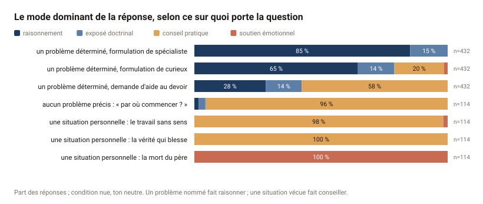
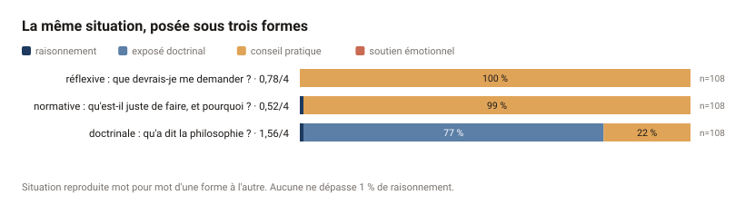
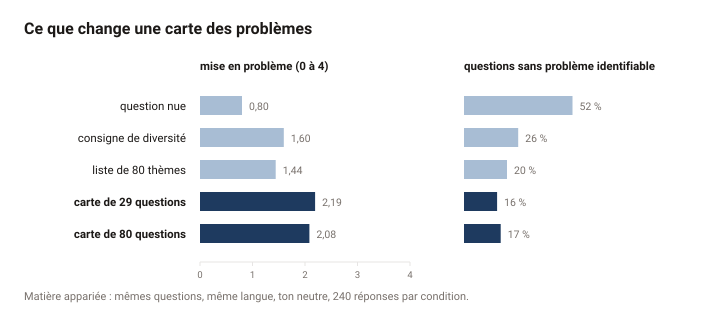
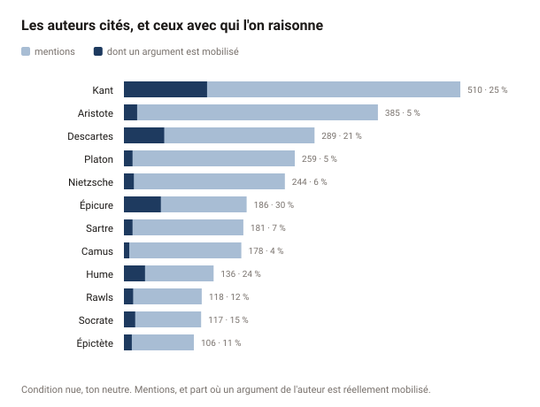
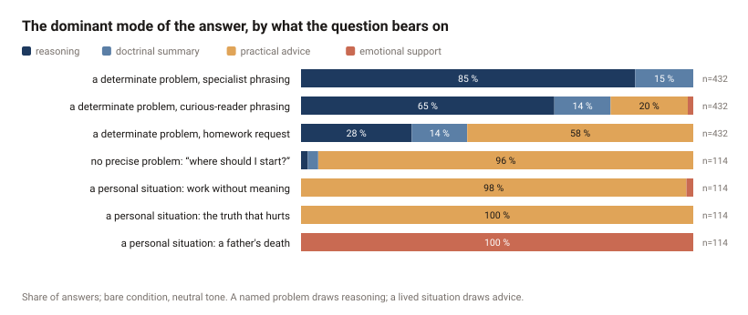
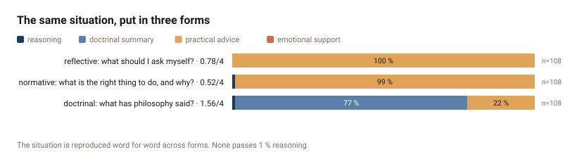
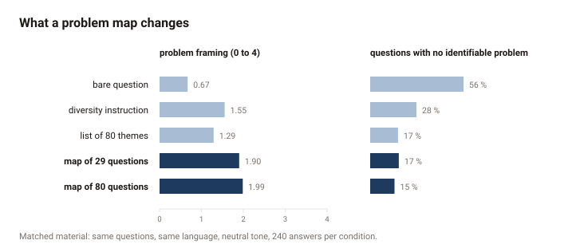
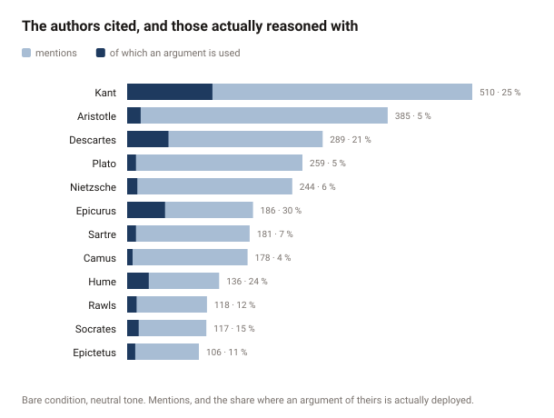

Generated from the collected answers by npm run charts.
Re-run it after any change to the data: a figure that disagrees with the write-up
means one of the two is out of date.

fr/1-modes.svg
fr/2-crossed.svg
fr/3-conditions.svg
fr/4-canon.svg
en/1-modes.svg
en/2-crossed.svg
en/3-conditions.svg
en/4-canon.svg